Let’s Draw
1 Let's Draw


Let’s Draw
1 Let's Draw


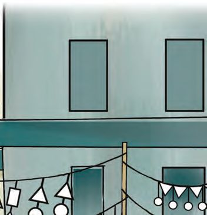
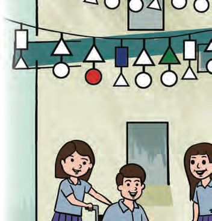
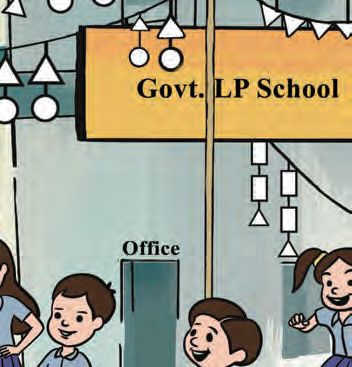
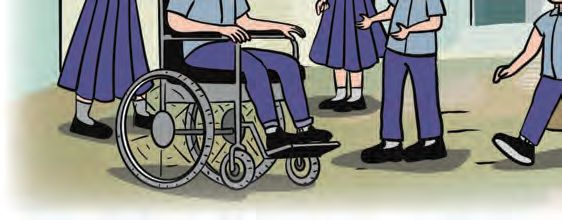
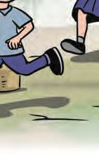
Mathematics Standard - III
Welcome Fest Anu and Subi are in Class three. Their school is decorated for the Welcome Fest. Colour the festoons and make the picture prettier.
Count the number of each shape in the festoons Shape Number
8


Let’s Draw
Greeting Card Vidhu is a new student this year. The others want to make him a greeting card. Subi and others are drawing pictures and sticking dots to make it pretty. Can you help? • There is one dot in the picture. How many more of the same size can you fix around it? • What I guessed:
• How many dots
Welcome to Vidhu
could I actually fix?
Can you draw? See the picture made with circles. Can you colour it?
Draw another picture using circles
How did you draw the circles? Any other way to draw circles?
9


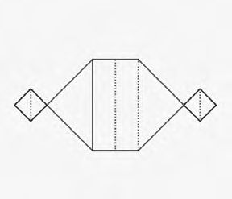
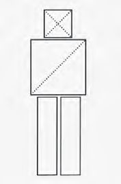
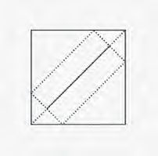
Mathematics Standard - III
Shapes in a boat Vidhu liked the card. He gave them a paper boat he made. Unfold the boat. What shapes do you see? Write the number of each in this table: Shape
Name
Number
Rectangle Triangle • Anu unfolded the boat and cut along the folds. See how she pasted the shapes in her notebook. Like this, paste these in different ways and make more pictures.
Let's make shapes ! Cut out a rectangle. Cut it into two pieces as in the picture. Join the pieces in different ways. What shapes can you make? Now cut it into four and try.
10


Let’s Draw
Let’s make shapes Anu and friends are making rectangles and triangles with eerkkil bits.
• Use 24 eerkkil bits of the same length to make rectangles and triangles. Write their numbers in the table below. Shape
Number
Triangles Rectangles • Draw a triangle and a rectangle here. Rectangle
Triangle
How many eerkkil bits did you use to make a rectangle? And how many for a triangle?
11


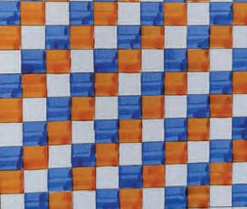
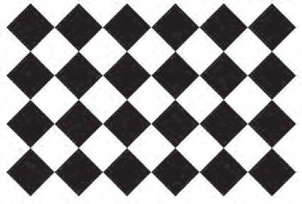
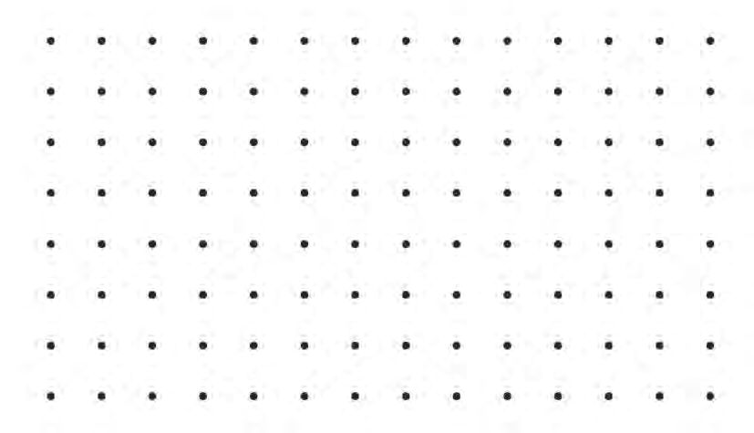
Mathematics Standard - III
Pictures in tiles The Grama panchayat has made a smart class room for the school. And the floor is tiled. Isn’t it nice? See the tile designs the children have drawn. Anu
Vidhu
Subi
Make a tile design by joining the dots below and colour it. Think in what different ways you can join the dots.
12

Let’s Draw
What shapes do you get by cutting along the dotted lines? B
A
C
Draw a single line to divide each picture below into two triangles. For which figures can’t you do this? A
B
Tick those you can’t.
C
A
B
E
D
C
D
E
What comes next? Draw what comes next in each of the patterns below.
Can you draw more patterns like these?
13


Mathematics Standard - III
Shapes around us See the picture. Do you see any familiar shapes? Write them down
Do you see any such shapes in and around your school? Write them in the table below. Rectangle
Triangle
Wooden shapes Anu and friends are making shapes with wooden blocks. You can also play such games. Who made the highest stack?
14
Circle


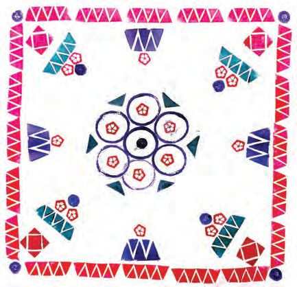
Let’s Draw
• Write the names of some objects shaped like rectangular blocks and balls. Rectangular blocks
Balls
Brick is a rectangular block. Ball is a sphere.
Vegetable printing Vidhu made a vegetable printed table cloth for the work experience contest. He used okra, carrot, potato and onion to make it. Can you too make such prints?
Evaluation activities 1. Look at the pictures on page 7. Which picture
do you like the most? What shapes are there in the picture?
Make one such in the sand tray.
15


Mathematics Standard - III
2. Joining shapes
Use rectangles and triangles and circles to draw any picture you like.
3. Colour the picture below and make it pretty.
16